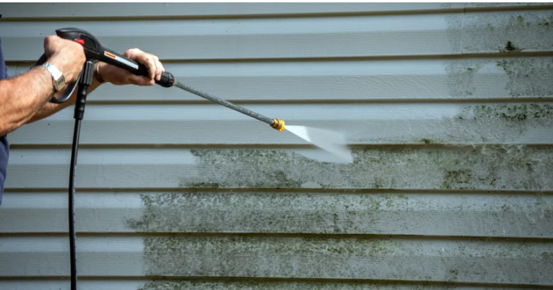

Clean Gutters. Bright Exteriors. No Hassle.
Get an instant quote and book your appointment in minutes — no phone call, no waiting, no back‑and‑forth.
Instant Estimate Snapshot
Most Jacksonville homes fall into these ranges:
- Gutter Cleaning: $99–$199
- Gutter Brightening: +$60–$120
- Driveway Pressure Washing: $99–$149
- Siding Soft Wash: $149–$299
Get your exact automated quote below — takes under 2 minutes.
Gutter Cleaning & Pressure Washing in Jacksonville, FL
Jacksonville’s heavy rain, humidity, and oak trees cause gutters to clog quickly. Regular gutter cleaning prevents overflow, foundation damage, and wood rot. Our pressure washing and soft wash services remove algae, mildew, and dirt caused by Florida’s humid climate — keeping your home exterior clean and protected.
Select Your Services
Instant Quote Calculator
Gutter Cleaning Estimate
Pressure Washing Estimate
Total Estimated Price
Frequently Asked Questions
How much does gutter cleaning cost in Jacksonville?
Most homes fall between $99–$199 depending on height, debris level, and gutter length.
Do you offer same‑week appointments?
Yes — most gutter cleaning and pressure washing jobs are scheduled within 2–5 days.
Is pressure washing safe for siding?
We use soft wash methods to protect paint, stucco, Hardie board, and vinyl siding from damage.
How often should gutters be cleaned?
Jacksonville homeowners typically need cleaning every 6–12 months due to heavy rainfall and oak tree debris.
Book an Appointment
Choose a date to see available times.
Explore Our Exterior Cleaning Services
Gutter Cleaning in Jacksonville • Gutter Brightening (Oxidation Removal) • Pressure Washing Services • Siding Soft Wash House Cleaning
Finish Booking
By submitting this form, you agree to receive appointment updates and service messages from River City Gutter Cleaning & Pressure Washing. Reply STOP to opt out. Message/data rates may apply.
Customer Reviews
⭐⭐⭐⭐⭐ “Fast, professional, and affordable. My gutters look brand new.” – Jacksonville homeowner
⭐⭐⭐⭐⭐ “Best pressure washing service I’ve used in Jacksonville.” – Arlington homeowner
⭐⭐⭐⭐⭐ “Quick scheduling and great communication. Highly recommend River City.” – Mandarin homeowner
Serving All Jacksonville Neighborhoods
- Arlington
- Mandarin
- Southside
- San Marco
- Baymeadows
- Jacksonville Beach
- Riverside
- Town Center
- Durbin